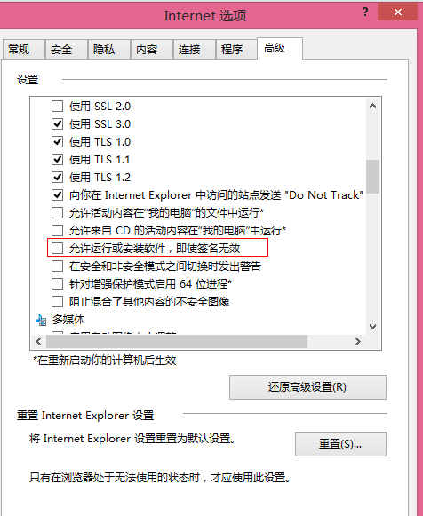
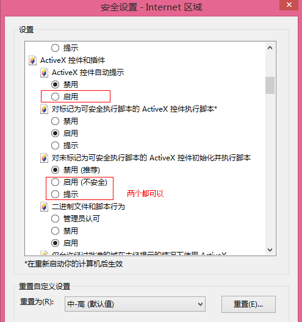
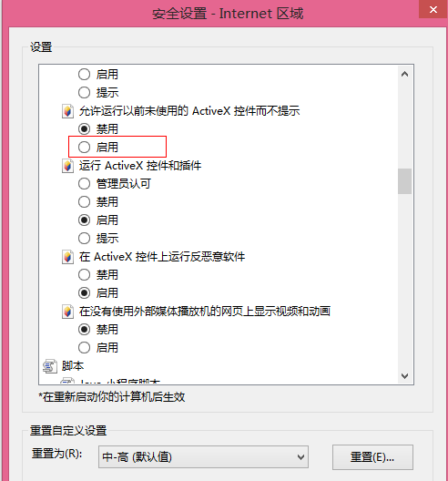
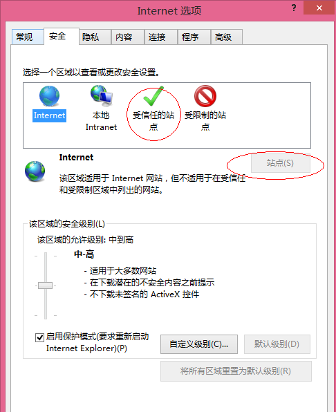
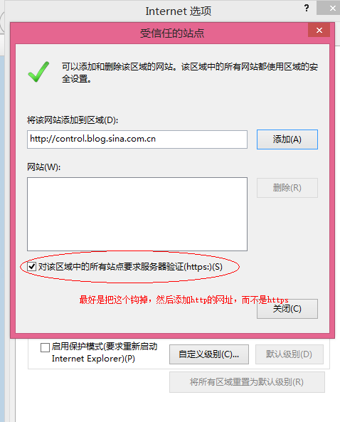

IE下如果安装失败，请进行下列设置：
1、首先打开Internet选项，在“高级”菜单中勾选“允许运行或安装软件，即使签名无效”菜单，然后确认保存。 
2、然后在Internet选项中继续切换到“安全”选项卡，单击下面的“自定义级别”，在弹出的菜单中勾选如下选项：  
3、同样在“安全”选项卡中，选中“受信任的站点”在单击“站点”按钮，然后添加你要访问的网站的地址：  
4、然后重新启动浏览器即可。